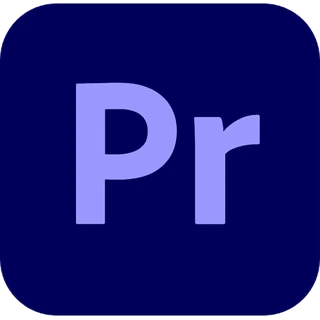
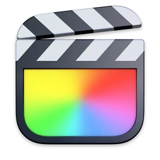

THE EDITOR'S TRANSLATOR — GUIDE 001
편집은 익숙하게.
다빈치는 새롭게.
쓰던 프로그램은 달라도, 만들고 싶은 영상은 같으니까.
익숙한 기능을 다빈치 리졸브에서 바로 찾아보세요.
기능명뿐 아니라 “목소리 크기 일정하게” 같은 표현도 검색할 수 있어요.
01 / SELECT YOUR EDITOR
어떤 편집기를
사용하고 계신가요?
기존 프로그램을 선택하면
익숙한 기능과 다빈치 기능을 한눈에 비교할 수 있습니다.
01 / ADOBE WORKFLOW

Premiere Pro
익숙한 트랙 편집에서 더 넓은 색보정으로.
47개 기능 비교
02 / SHORT-FORM WORKFLOW
CapCut
숏폼 편집의 감각을 그대로, 더 세밀하게.
47개 기능 비교
03 / MAC WORKFLOW

Final Cut Pro
마그네틱 타임라인에서 새로운 편집 흐름으로.
47개 기능 비교
04 / MOBILE WORKFLOW
VLLO
손안의 편집에서 데스크톱 편집으로.
47개 기능 비교
NOTE. 용어가 같아도 작동 방식은 다를 수 있습니다.기능별로 차이까지 함께 안내합니다.
02 / FEATURE DICTIONARY
이런 기능을
찾고 계셨나요?
01화면 확대·축소클립 화면의 크기를 키우거나 줄입니다.Zoom
02여러 클립에 효과 한 번에 적용상위 트랙에 배치하여 아래쪽 여러 클립에 같은 효과를 적용합니다.Adjustment Clip
03음성 자동 자막영상의 음성을 분석해 자막 초안을 생성하는 기능입니다.Create Subtitles from Audio
04기본 색보정노출·대비·채도·화이트밸런스를 종합적으로 조정합니다.Primaries / Color Page
05오디오 음량 정규화클립 오디오 레벨을 지정한 기준에 맞게 조절합니다.Normalize Audio Levels
06속도 램핑·속도 커브영상 중간에서 속도가 점점 빨라지거나 느려지도록 조절합니다.Retime Curve